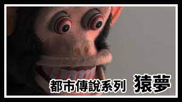

猿夢

描述
剛剛做夢了
從以前開始有時我作夢時會意識到自己正在作夢
這次也一樣
不知為何發覺時獨自一人身處在微暗的無人車站中，回想起來還真是陰濕的夢啊。
突然間車站傳來一陣廣播，聲音聽起來是毫無精神的男性。
「電車～即將進站，搭上這輛電車就會遭遇到很恐怖的事喔～」這樣意味不明的內容
過沒多久真的有輛電車進來車站了。這與其說是電車，不如說像是遊樂園的觀園車
列車上坐著數位臉色非常難看的男女。正當我感到這是什麼鬼夢境時，也想試試自己的夢
揪竟能給自己多少恐怖，於是決定上車了，如果真的恐怖到無法承受時只要醒來就好啦。
我啊～如果發覺到自己在作夢的話能夠隨時從夢裡醒過來喔。
我選擇電車尾端數來第三席坐，周圍飄盪著溫濕的空氣，臨場感逼真到讓我懷疑這是不是
夢境。
「列車出發～」隨著廣播響起電車開始前進，這前方究竟會發生什麼讓我感到不安又期待
電車自車站出發後很快就進入隧道，微紫的燈光在隧道中顯得相當詭異。隧道裡的景色盡
是小時候遊樂園西洋鬼屋裡的樣子。
畢竟這電車是台遊園車嘛～結果這夢只是反映出過去的記憶，一點都不恐怖。
正這麼想時又傳出廣播的聲音。
「接下來是活體肢解～活體肢解～～」
活體肢解？魚的嗎？ 正當這麼想時後方突然傳來淒厲的悲鳴
回頭一看，坐在電車最後位的男子周圍出現四位衣衫襤褸的小人。
再仔細一看，男子已被刀刃切裂，身體就像生魚片拼盤一樣。強烈的腥臭瀰漫四周，
男子一直發出震耳欲聾的悲鳴，染血的內臟一個個被掏出並棄置在四周。
我的正後方坐著臉色難看的長髮女子，但她即使發生這樣的騷動也依然沉默不語，彷彿
根本沒發覺的樣子。
我被自己如此超展開的想像嚇到了，恐懼地思考這揪竟是不是夢，觀望一下再醒來好了
當我回神時，末座的男子已經不見了，只剩下赤黑的污血跟肉塊般的物體遺留著
後座的女子依然無表情般沉默不語。
「接下來是刳剔～刳剔～～」
剛講完兩名小人就拿著叉匙般的物品出現，開始將後座女性的眼球刳出她至剛才都
毫無表情的臉因劇烈疼痛都扭曲起來眼球從眼窩中被拔飛出來，空間中滿布著血與汗
的惡臭。
我感到非常驚恐，趴在前方發抖不敢起頭。現在就是逃走最佳時機。
不過依序下來的話就是第三號的我了，既然都準備要醒來了不如確認自己會輪到什麼廣播
再走也不遲。
「接下來是絞肉～絞肉～～」
糟透了...不管哪種程度都非常容易想像，於是努力集中精神從夢中醒來
「醒來吧。醒來吧。快醒來吧。」
平時只要集中精神到如此強度就能成功。
突然間傳出「嘰～～」的機械音，這次小人在我膝蓋上拿出奇怪的機械
大概是要把我絞碎的道具吧。
「快醒來。快醒來。快醒來。」全身聚精會神如此祈禱
「嘰～～」的聲音愈來愈大，臉上的風壓也愈來愈強，正當想一切都完了的瞬間突然
寂靜下來，看來總算是從惡夢逃離出來了，汗流了全身淚也不停地流，我從床上到廚房
喝了大量的水後才總算冷靜下來
「就算如此恐怖真實，畢竟也只是夢而已」如此告訴自己
翌日，在學校把夢中發生的事跟同學聊過，不過大家也只是覺得很有趣，就是夢而已。
自那時已過了四年，大學生的我已經把那件事忘光，現正忙於打工
但自從某天晚上又開始了。
「接下來是刳剔～刳剔～～」
這次從這個場面開始，我馬上就意識到「阿，又是那個夢」
接著就跟上次一樣，兩位小人把女子的眼球挖出來。這時心想糟了又開始默念醒來吧。
但這次很難醒來...
「醒來吧。醒來吧。快醒來吧。」
「接下來是絞肉～絞肉～～」
情況愈來愈糟了。「嘰～～」接近中
「醒來吧。醒來吧。快醒來吧。快給我醒來！」
...總算變安靜了
正慶幸又逃離夢境並張開眼睛之時清楚聽到那有氣無力的廣播聲
「又被你逃啦～下次再來時就是最後囉～」
張開眼，確認已經從夢中完全醒來在自己房間中
但最後聽到的廣播絕對不是夢境，確實是在現實世界中聽到的，現在到底要怎麼辦呢？
雖然自從那次沒有再做過那場夢，但下次再夢到時已經有心臟麻痺而死之類的覺悟
但在這裡的世界是心臟麻痺，在那個世界是被做成絞肉啊...